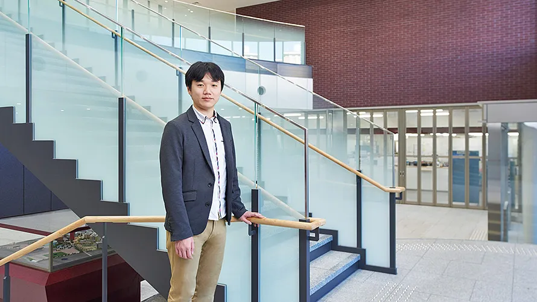

ビジネスや生命・スポーツなどの各分野からスマートフォンやオンラインゲームなどの身近なものまで，私達の生活は常に大量のデータに囲まれています．私は特に，論理と記号処理の観点から，データに隠れた本質的な情報や価値のある共通傾向を発見するための方法論，及びその支援システムについて研究・開発を行っています．
自然言語とは，私達が日常使用している言葉のことです．この自然言語をコンピュータで，目的に応じて情報処理することを自然言語処理といい，その目的は文書処理，機械翻訳，対話システム，文章の要約など用途はどんどん広がっています．インターネット上に展開する膨大な情報を整理・分類・検索・抽出・要約する分野で，実用的な発展を遂げています．
音楽を聴いて感動したり，友人と会話を楽しんだり・・・そんな我々の生活に欠かせない「音」をコンピュータが理解し，検索や作曲などを自動的に行う方法について研究します．「成長実感研究室」を標語に掲げ、1人1人が自らの成長を実感できるまで，懇切丁寧に研究指導を行っています．
駅にある路線図では，駅が点で表され線で結ばれています．あのように点が線で結ばれたものをグラフといいます．インターネットを含む世の中のネットワークは全てグラフとみなすことができます．私の研究室はグラフ理論を研究しています．乗り換え案内ソフトやインターネットの効率的設計などで，グラフ理論は大いに活躍しています．
コンピュータを使って問題解決するには，問題の特徴を捉え効率の良い解法（アルゴリズム）を設計することが重要です．私は，数学の位相幾何学という分野の計算問題を対象に，効率の良いアルゴリズムの開発を行なっています．学生の皆さんには，様々なネットワークの構造解析にチャレンジしてもらっています．
めったに起こらないことが起こったときの驚きは大きいですね．そして，そのようなニュースには高い価値があると考え，大きな情報量を持つと定めます．これにより情報を科学的に取り扱うことが可能になり，無駄を省いた符号化や効率の良い誤り訂正符号の構成を問題にする分野が情報理論という分野です．
道具がうまく使えなくて困ることはありませんか？病気や障がいで不便な思いをしていませんか？これらの悩みを解決するために，私たちの研究室では「人に対してコンピュータはどう振る舞うべきか」を徹底的に考え，魅力的で使いやすいシステムをデザインしていきます．IoTやDeep Learning 等の技術も積極的に活用します．
会社が最も高い利益をあげる生産計画を立てる，自宅から大学への最短の通学ルートを検索するといった身近にある様々な問題が数理計画問題と呼ばれる問題に集約されます．本研究室では，数理計画問題を幾何学的なアプローチで解くことを目指して研究を進めています．
ビッグデータ時代と呼ばれるように，現代社会では膨大な量のデータが日々蓄積されています．大量のデータを活用して，効果的な意思決定を行うためには，人間にとってわかりやすいようにデータを可視化することが必要不可欠です．データ科学や情報可視化の研究を通じて，人々のより良い意思決定の支援を目指します．

ドラえもんの実現を目指しています．そのために生物の知性の根源を，神経科学や心理学，認知科学といった学術成果から探り，新しい人工知能の技術として応用します．例えば，人の言葉は話せないけれど，人とコミュニケーションができるロボットを開発中です．このロボットのモデルは「ドラえもん」に登場するミニドラです．